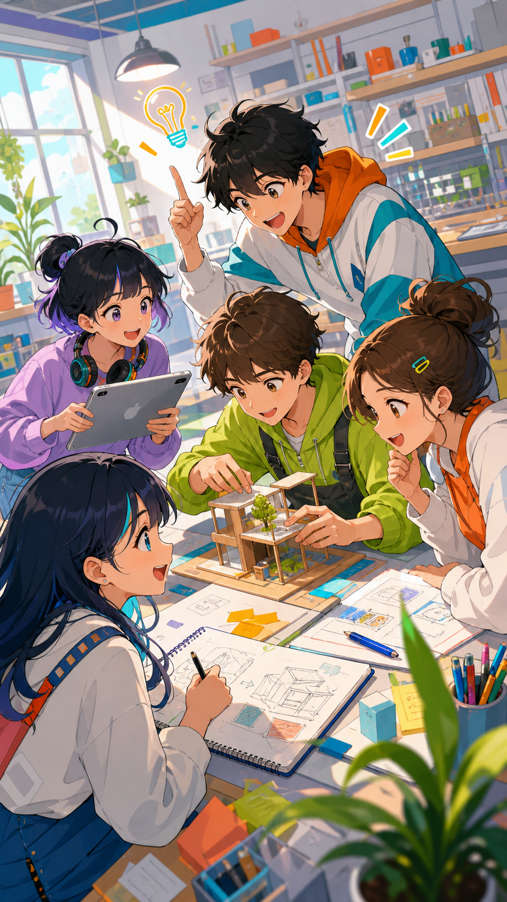
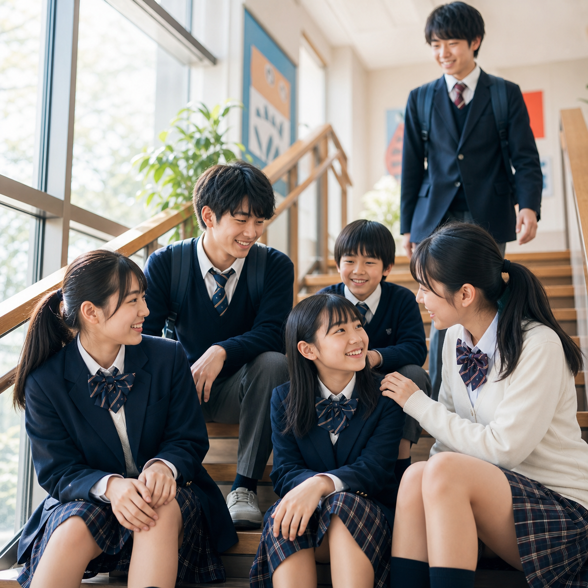
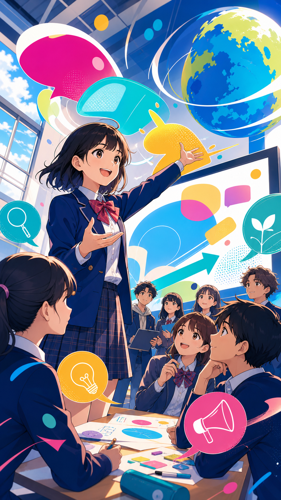

CREATIVE CHALLENGE
学年を越えて、
問いをつくる。
自分たちで課題を決めて、社会とつながる探究へ。

01 / 文教で起きていること
文教では、答えを覚えるだけで終わらない。問いを見つけ、仲間と考え、試して、伝える。その繰り返しが、きみの未来の材料になる。
CREATIVE CHALLENGE
自分たちで課題を決めて、社会とつながる探究へ。

SCHOOL LIFE
部活、委員会、6学年の仲間。放課後にも発見がある。

GLOBAL / ICT
英語、タブレット、生成AI。表現する道具は、もう手の中にある。

02 / きみの入口
自分の成長が、
楽しみになる。
文教での生活が、未来の自分を創る。
03 / 次の一歩
最新の説明会・募集要項は、公式サイトで確認できます。